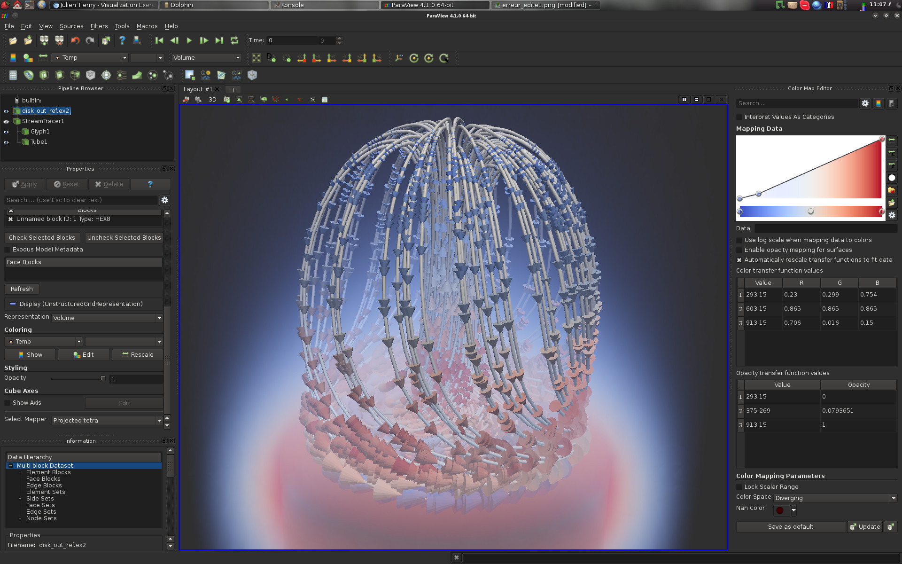

Goals
The goal of this exercise is to experiment various existing algorithms for the interactive visualization of complex data-sets. To do so, we will use one of the most widely used visualization system: ParaView.This exercise will help you have a concrete intuition and understanding of the techniques described throughout the class.
After completing this exercise as well as the exercise related to data conversion, you will be able to import into ParaView any data-set you generated in other classes or projects and to produce insightful interactive visualizations.
Software prerequisites
· A recent version of ParaView should be installed (4.1 or higher).The remainder of this exercise instructions assumes that the employed operating system is Linux. However, this exercise can be achieved with any OS. For non-Linux users, an easy alternative consists in installing a Linux system (such as Kubuntu) within a virtual machine (such as VirtualBox, a readily configured virtual machine is available HERE (md5sum: a59d9cf610ef5ddb7f0f6b338316df0a, password: ttk).
Documentation
· ParaView tutorials and sample data sets can be found HERE.Getting started
Data package
· Download the data package HERE and extract it under your home directory.ParaView basic usage
ParaView is an open source multiple-plateform application for interactive scientific visualization. It can be seen as a user-interface front-end to the VTK library. Notable features of ParaView are its support for highly parallelized and distributed processing as well as its remote visualization capabilities.
As shown in the above screen-shot, the user interface is divided into several panels:
· Pipeline Browser (top left): This panel lists the different data-sets that have been loaded by the user as well as the filter effects that have been applied to them;
· Pipeline Browser (middle left): This panel enables to interact with the visualization properties of the selected item in the pipeline browser;
· Information (bottom left): This panel displays statistics and properties about the selected item in the pipeline browser;
· Color Map Editor (right): This panel enables to interact with color maps;
· Central View (middle): This is where the actual visualization happens! Note that several tabs can be opened, to alternate between several visualizations.
Along the interactions, other panels can optionally be displayed, for instance to visualize and interact with planar layouts such as charts or histograms.
ParaView follows VTK's pipeline philosophy.
In this paradigm, a visualization is obtained by applying a sequence of geometry processing tasks on one or several data-sets. In VTK, geometry processing tasks are materialized by Filters. Each filter takes some data on its input and delivers some data on its output. In the above example:
· 1 data-set has been loaded (disk_out_ref.ex2);
· 1 filter (called Stream Tracer) has been applied on the input, yielding a pipeline object named StreamTracer1;
· 2 filters have been applied on the pipeline object StreamTracer1, yielding two new pipeline objects: Glyph1 and Tube1.
Pipeline objects can be visualized or hidden by clicking on the eye icon on the left of each object.
Given a pipeline object, a large selection of filters can be applied to it. In the following screen-shot, the list of default filters is displayed. Only those that can be applied to the selected pipeline object are not shaded and can consequently be executed.
Note that with the menu Filters -> Search... you can easily search for filters by typing a few letters contained in their name.
To load a data-set in ParaView, use the following menu File -> Open.
To save your current pipeline, use the following menu File -> Save State. For each question, it is recommended to save the pipeline once the question is completed.
Now, let's get the exercise started.
Domain visualization
Question 1
· Load the following volume data-set data/vectorFields/3-triangulation/output.vtu;· Initially, you should be visualizing the following thing:

This visualization shows the boundary of our volume.
Question 2
To only consider as a pipeline object the actual boundary of our volume, one can use the "Extract Surface" filter. Apply it to the input data-set. At this point, you should visualize the same result as in the previous question.What shading model is employed?
Question 3
The shading of the surface could be automatically improved by ParaView. However, it seems that some information is missing in the pipeline to trigger a smooth shading.What is this missing information?
Question 4
Find and apply the appropriate filter to compute the missing information of the previous question to trigger a smooth shading of the surface.If you answered correctly this question, here is what you should be visualizing:
Question 5
Disable the visualization of your active pipeline object and enable the visualization of the input data-set. In many scenarios, it may be interesting to visually inspect the structure of the mesh on which is defined our data. In the Properties panel, adjust the right option to visualize the mesh as a wire-frame on top of the surface.If you answered correctly this question, here is what you should be visualizing:
Question 6
The visualization in the previous question only enables to display the mesh elements on the boundary of the volume. It is often useful to also inspect the interior of the volume. To achieve this, ParaView provides selection features, which enable users to interactively select regions of interest in the geometry. This selection tool can be extremely useful in variety of other visualization tasks.To use the selection tool, click on the "Select Cells Through" button at the top of the visualization panel. This tool can also be accessed by hitting the key "f".
After selecting some parts of the geometry, you should see your selection highlighted in colors as follows:
Question 7
Find and apply the appropriate filter to create a pipeline object that only contains the selected cells. Further apply the necessary filters to obtain a smooth shading of the resulting objects with a wire-frame representation on top of the resulting surface.If you answered correctly this question, here is what you should be visualizing:
Question 8
Apply the appropriate filters to visualize the boundary surface of our input data-set in smooth shading and modify the appropriate properties to display it in transparency with a distinct color. Also, extract its feature edges and represent them with tubular surfaces.If you answered correctly this question, here is what you should be visualizing:
Further notes
ParaView provides a few domain re-meshing features that might be of interest to help further processing in terms of accuracy or robustness. For instance, if the input domain is not a triangulation, it can be transformed into a triangulation with the filter "Tetrahedralize".Scalar field visualization
Question 9
Load the data-set data/scalarFields/2-grid/output.vti. By default, ParaView triggers a color map visualization of the scalar field, as follows:Play with the color map editor to improve the contrast of the visualization, in particular in between the canyon and the rims, to produce the following effect:
Question 10
ParaView allows you to review the actual values of the scalar field on a per vertex basis. To trigger the spreadsheet view, click on the "Split Horizontal" button (top of the visualization panel in the center) and click on "Spreadsheet View".If you got it right, here is what you should be visualizing:
As discussed in the class, raw numbers are difficult to interpret, hence the need for visualization. However, in certain tasks, it can provide useful information. Use the manual selection tool to identify the values associated with the dark red regions of the visualization.
Question 11
Find an apply the appropriate filter to generate out of this data-set a surface embedded in 3D, such that for each point, one of its embedding component is equal to its scalar field value.If you got it right, here is what you should be visualizing:
Question 12
Load the data-set data/scalarFields/3-triangulation/output.vtu and play with the color map editor to change the color palette according to your preference. For instance:Color maps (which define a correspondence between scalar values and color) are particularly useful for 2D domains but fall short for 3D domains. This paradigm reaches one of the major bottlenecks of the visualization of 3D data: occlusion. In particular since, the screen onto which the data-set is projected is intrinsically 2D, some data is loss in the visualization during the projection process.
To investigate the evolution of the scalar field within the volume, use the same techniques as in Question 8 to obtain the following visualization:
Question 13
As seen in the above screen-shot, the user selection tool enables the user to select cells of the input domain. Hence, the boundary of the selection appears unevenly cut. Find and apply a filter that precisely cut the geometry along clipping planes. Also, adjust the color map to yield a better contrast on the cuts of the volume to reproduce the following visualization:Question 14
A limitation of the above visualization is that it conveys information about the scalar field only along the clipping planes. An alternative is to only show in the visualization regions of the domains for which the vertices take some value in a user-prescribed range. This can be achieved in ParaView in two ways:· By specifying an interval;
· By specifying an isovalue (for isosurface extraction).
Find the two filters that achieve these effects and try to reproduce the following visualization:
Question 15
Try to display at the same time the isosurfaces of at least 4 distinct isovalues. Use transparency and other effects (at your discretion) to try to reproduce the following visualization (note that normals may have to be computed for a better transparency rendering):As can be seen on the above screen-shots, isosurface visualization still suffer from major occlusion issues if many isovalues are considered. To overcome this issue while still visualizing most of the isovalue range, one needs to consider volume rendering.
Question 16
Load the data-set data/scalarFields/3-grid/output.vti.In the following questions, we will try to generate a volume rendering that displays several materials of a foot acquisition. In particular, we would like to:
·Represent the skin of the foot in red, and with enough transparency such that the inside of the foot could be visualized as well;
·Represent the boundary of bones in white, with a bit of transparency;
·Represent the inside of the cortical bone in brown, with a strong transparency.
By isosurface extraction, identify the isovalues corresponding to these materials and adjust the properties of the resulting isosurfaces to achieve the color and opacity described above.
If you answered correctly this question, here is what you should be visualizing:
Question 17
Delete the isosurfaces from you visualization pipeline and select the input data-set in the Pipeline Browser panel. Adjust the right property in the Properties panel to trigger volume rendering.Adjusting a transfer function can be a very frustrating task for a novice user. A standard strategy consists of the following steps:
·For each material, draw a step function in the transfer function (Color Map Editor panel, cf the above screen-shot example);
·Then adjust the width and the opacity of these steps functions. Note that these parameters can be adjusted directly on the curve or in the array below for more precision;
·Finally, smooth the steps functions by inserting more control points.
After this transfer function tuning, you should be visualizing something similar to this:
Notice that the volume rendering is much smoother than the isosurface-based rendering. Why is that so?
Vector field visualization
Question 18
Load the data-set data/vectorFields/2-grid/output.vti.By default, ParaView triggers a color map visualization of the data based on the magnitude of the vector field, as follows:
This data-set is a time-step of a time-varying computational fluid dynamics simulation, where a fluid is continuously injected from the left to the right in the presence of a fixed obstacle (left). Such a procedure is known to yield vortices in the flow, organizing themselves with a very regular pattern known as the Karman vortex street.
In general, vortices are of special interest in computational fluid dynamics. For instance, in mechanical engineering, the appearance of vortices can reduce the efficiency of fuel injection procedures. In this question, we will try to visualize and enumerate the vortices of this data-set.
·What scalar quantity (derived from the input vector field) could be useful to analyze vortices?
·Find and apply the appropriate filter that computes several types of vector derivatives;
·The quantity we are interested in is given by the Z component of the resulting vector field called "Vorticity". Note that this vector field is defined on a per cell basis. Display this component with a color map and increase its contrast to reveal and distinguish the clockwise vortices from the counter-clockwise ones.
If you got it right, you should be visualizing something like this:
·Use the "Calculator" filter to extract an actual scalar field from the Z component of the "Vorticity" vector field. The "Calculator" filter is an extremely useful filter, that enables to apply arithmetic operations on top of one or several data-sets;
·Based on the thresholds you used for the contrast enhancement of the color map, use the "Threshold" filter to extract the vortices and display them on top of the original magnitude scalar field:
Do vortices necessarily correspond to regions of the domain where the flow has a high magnitude?
Question 19
A popular technique for the visualization of vector fields consists in using "Glyphs", such as arrows, denoting the actual vector in specific points of the domain. Apply the "Glyph" filter and try to reproduce the following visualization:Question 20
Load the data-set data/vectorFields/3-triangulation/output.vtu and try to reproduce the following glyph based visualization:As it can be seen in the above screen-shot, glyph-based visualizations of vector fields often fall short because of occlusion. It can even yield misleading visual insights. In this example, this glyph-based visualization seems to indicate a general trend of the vector field to uniformly point downwards.
Question 21
Find and apply the appropriate filters to:·Extract streamlines;
·Enhance their rendering by using tubular surfaces.
If you got it right, you should be visualizing something like this:
Question 22
To better estimate the depth of the streamline, trigger the volume rendering of the magnitude of the vector field.If you got it right, you should be visualizing something like this:
In the above screen-shot, thanks to the volume rendering, background streamlines can easily be distinguished from the foreground streamlines due to the blue "fog".
Question 23
In the above screen shot, the direction of the vector can be visually estimated thanks to the streamline and their depth can be estimated with the volume rendering. However, the orientation of the vector field is this region of space is an information that is lacking from this visualization. Find and apply the appropriate filters to provide visual insights about the orientation of the vector field in this region of space.This could look as follows:
Question 24
The magnitude of the vector field is also an information which is lacking from the previous visualization. Adjust the appropriate properties to provide visual insights about the magnitude of the vector field.This could look as follows:
Question 25
Load the data set data/vectorFields/3-grid/output.vti. Find and apply the appropriate filters to generate the following visualization:Note that ribbons, in contrast to tubes, enable to better illustrate small-scale helicoidal trajectories (turbulent area in blue).
Question 26
Load the data-set data/scalarFields/3-triangulation/output.vtu. Extract an isosurface for the isovalue 63.5.If you got it right, here is what you should be visualizing:

Notice the little "tunnel" in the center of the above screen shot. As the isovalue increases, this tunnel will collapse. To what kind of critical point does it correspond?
Question 27
Find and apply the right filter to generate the gradient vector field of this data-set. Then seed streamlines exactly at the point where the tunnel collapses. Make sure that the considered neighborhood around the seed point is small enough (radius property). Use a distinct color for forward and backward streamlines.If you got it right, here is what you should be visualizing:
This streamline layout is fairly specific to a special type of topological event in vector fields. What kind of event are we visualizing? What do the streamlines we extracted correspond to?
Question 28
Notice that in the above screen-shot, the red streamlines seem to stop suddenly. Why is that so? In what situations does a streamline stop? By extracting isosurfaces of the original data-set (and selecting the appropriate components with "Extract Cells by Region" filter), display these stopping areas.If you got it right, here is what you should be visualizing:
To what topological event do they correspond to?
Question 29
Try to identify the most prominent saddles of the data-set and mark them with a sphere colored according to their type. For each saddle, extract its separatrices.If you got it right, here is what you should be visualizing:
Question 30
Compute streamlines (forward and backward) at various seeds (with a sufficiently small neighborhood radius) within the data-set and display them with one color per seed.If you got it right, here is what you should be visualizing:
What does this visualization highlight?
Tensor field visualization
Question 31
Load the data set data/tensorFields/3-triangualtion/output.vtu.Apply a series of clipping, find and apply the appropriate filter to display glyphs representing the eigenvalues and directions of the tensor field and try to reproduce the following visualization:
Note that the option "Limit Scaling By Eigenvalues" should be checked and that "Max Scale Factor" should be set to an appropriate value.
Updated on December 13th, 2017.